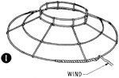

1952—How to Make Hats
by Ruby Carnahan
Covering a Wire Frame
METHOD FOR COVERING PLAIN WIRE FRAME
(Illus. 1) If a sheer material is used to cover a wire frame, the wire frame can be dyed the same color as the material with Rit Dye. This will eliminate winding the frame wire. With the exception of the wire on brim edge, the wire is wound. Use the same method as used for covering buckram frames, cutting brim covering from a pattern, pinning top brim fabric to brim, and sewing to brim wire, then pin facing to under side of brim around edge and at headsize. Finish brim edge with a bias fold or with wired velvet tubing.
BIAS FOLD
Cut a 2'" bias strip of material, (either velvet or matching material). Fold bias strip double and place over wire on brim edge, stretch bias piece and pin all around brirn, join ends of bias strip and make a bias seam. Remove, stitch,and press seam open. Return to brim again pinning fold all around edge of brim. Turn raw edges of fold under 1/4" on each side and slip stitch.
VELVET TUBING
Measure two wires to fit edge of brim, run each wire through a piece of velvet tubing and stretch velvet tubing on wire. Join wire with a wire joiner, turn one edge under and lap stretched velvet tubing ends and sew together neatly. Pin tubing around brim edge and slip stitch. Place tubing on top edge of brim and one on facing of brim.
METHOD OF WINDING WIRE FRAME
Cut 1" strips of veiling or maline the same color as material used for hat. Start in back and wind each wire as illustrated.
COVERING WIRE FRAME ON THE BIAS
Run a tape line from top at headsize to brim edge and continue over edge of brim to headsize on facing. Add 2" to this measurement and cut a bias piece of material width of this measurement. Fold bias piece double and place over wire on edge of brim. Stretch and pin around edge of brim and join ends together with a bias seam. Remove from brim and sew together. Press seam open. Put back over wire brim, steam and stretch top and bottom into headsize until free from wrinkles. Pin and sew top and bottom separately around headsize.